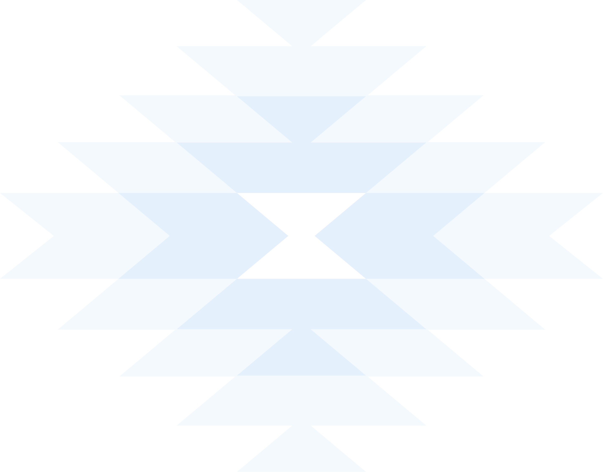

Ronda de feedback
Nueva web
Gracias por participar en el proceso de revisión del nuevo sitio web de Kushki. Tu opinión es fundamental para asegurarnos de que la información presentada sea precisa, relevante y alineada con la visión de la compañía.
Por favor ten en cuenta:
- Esta revisión está enfocada exclusivamente en el contenido e información de cada página.
- El diseño y elementos visuales del sitio han pasado por un proceso de revisión especializado, por lo que en este formulario nos enfocaremos únicamente en el contenido. ¡Gracias por entender!
- Si vas a revisar páginas de diferentes categorías, deberás diligenciar el formulario nuevamente por cada categoría.
*Todos los ajustes serán revisados por el equipo antes de ser implementados.

Identificación y selección
Cuéntanos quién eres y qué páginas vas a revisar.
Por favor ingresa tu nombre.
Por favor ingresa tu cargo.
Por favor selecciona una categoría.
Selecciona primero una categoría para ver sus páginas.
Selecciona al menos una página.
Preguntas de revisión
Responde las siguientes preguntas basándote en el contenido de las páginas que seleccionaste. Si alguna respuesta es "No" o "Parcialmente", podrás detallar los ajustes en la siguiente sección.
Registro de ajustes
Cada ajuste debe registrarse de forma individual. Recuerda ser específico y dimensionar los cambios — modificaciones extensas pueden impactar los tiempos de salida del sitio. El equipo revisará cada ajuste y se pondrá en contacto si es necesario.
Selecciona la página del ajuste.
Describe el ajuste antes de continuar.
Selecciona una captura de pantalla del ajuste.
Para finalizar
¡Gracias por tu tiempo y contribución!
El equipo revisará todos los comentarios recibidos y se pondrá en contacto si es necesario. 🙌
Ronda de feedback
Nueva web